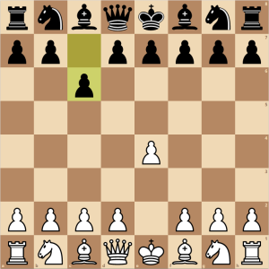

Special Moves
Pawn's Special Moves
The pawn has two special moves: En Passant and Promotion
Promotion

A pawn that reaches all the way to the opposite side of the chess board can be promoted to another piece of choice, such as queen, rook, bishop, or knight. This is called promotion. The Queen is the most popular choice for promotion. The choice of promotion is not limited to capture pieces: players can have 10 queens on the board!
En Passant

An unusual special move is the 'en passant' capture. This takes place when a pawn uses its initial move option to advance two squares instead of one, and when doing so passes over a square that is threatened by an enemy pawn. That enemy pawn, then has the option of capture the moving pawn as if it had only move one square. Then the enemy pawn moves to the empty square that the captured pawn had passed over. This is called En Passant.
King's and Rook's Special Move
Castling

With the Rook, the King can make a special move called castling. In castling, the king moves two squares towards one of its rooks and then the rook is placed on the other side of the king. Castling consists of moving the king two squares on its first row toward either one of its rooks, then moving the rook onto the square over which the king crossed. In order to castle, the following conditions must be met:
- The King cannot be in check nor pass through check.
- Neither the king nor the rook must have moved previously.
- There cannot be any pieces in between the king and the rook.
Ways a Chess Game Can End
Win/Lose
A game can be won or lost in the following ways:
Checkmate
Checkmate occurs when the king is in check and the player has no legal move. Click the GIF above to learn more about checkmate.
Resignation
Resignation occurs when a player resigns, perhaps because they are in a hopeless position.
Win On Time
In games with a time limit, a win on time occurs if the opponent runs out of time, regardless of who is winning.
Draw
There are multiple ways where a game can result in a draw:
Stalemate

If the player to move has no legal move, but is not in check, a stalemate has been achieved.
Insufficient Material/Dead Position
If neither player is able to checkmate the other player just move using a legal move, the game is drawn. This state of the game is called a Dead Position or Insufficient Material.
Draw by Agreement
This is a type of draw where there is a mutual agreement between the players to draw.
Threefold Repetition
This type of draw occurs when neither player is able to avoid repetitive moves or are constantly making repeating moves.
Fifty-move rule
If during the previous 50 moves no pawn has been moved and no capture has been made, it's a draw.
Notation
There is a notation to record chess moves. The system of notation used today is the short-form algebraic notation.
Each square is indentified with a set of coordinates, a-h for the columns followed by 1-8 for the rows.
The format is:
initial of the piece moved - column of destination square - row of destination square
Initials of Pieces
| Piece | Initial |
|---|---|
| King | K |
| Queen | Q |
| Rook | R |
| Bishop | B |
| Knight | N |
| Pawn | None |
Examples
- Qg5 - Queen moves to the g-column, 5th row.
- Ngf3 - Knight moves from the g-column, to the square f3.
- R1e2 - Rook on the first row moves to square e2.
- e4 - Pawn moves to the square e4.
- Bxf3 - Bishop captures on square f3.
- exd5 - Pawn on the e-column captures a piece on square d5.
- e1=Q - Pawn promotes to a Queen.
- O-O - Castling to kingside.
- Qxf7# - Queen delivers checkmate by capturing on f7.
Basic Openings
A chess opening is the initial stage of a game. Almost all openings have standard names, such as the "King's Pawn Opening". There are 1,327 named openings and variants.
Common Chess Openings
King's Pawn Opening

With this opening, white immediately takes control of the center and opens lines of development for its pieces. The King's Pawn opening has been an all-time favourite opening for most players.
Ruy Lopez
The Ruy Lopez, also known as the Spanish game is named after Ruy Lopez de Segura. Nearly 500 years later, the Ruy Lopez opening still remains as one of the most popular chess openings.
Sicilian Defense
The Sicilian Defense is black's most popular response to the King's Pawn opening. By playing this opening, black immediately fights for the center and attacks d4 while avoding the symmetry of e5.
Caro-Kann Defense
The Caro-Kann Defense prepares d5 on black's second moved to challenge white's e4 pawn.
Queen's Gambit
The Queen's Gambit, marked by the moves 1. d4, d5 and 2. c4 is one of the oldest chess openings. This approach offers a free pawn.
Reti Opening
The Reti Opening is named after the chess master Richard Reti. This opening leads to closed positions.
Englund Gambit
This is a pawn sacrifice for black, but black can hope to win the game by tricking white to capture their sacrificed pawn.
Englund Gambit Example
Here's an example of how black can win the game in ONLY 8 MOVES! (by playing the Englund Gambit).